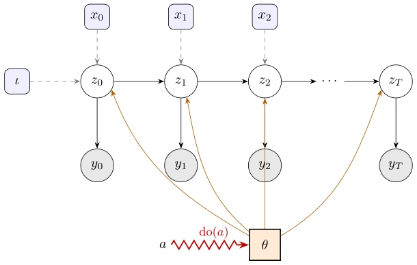
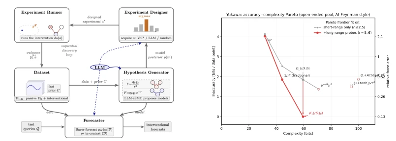
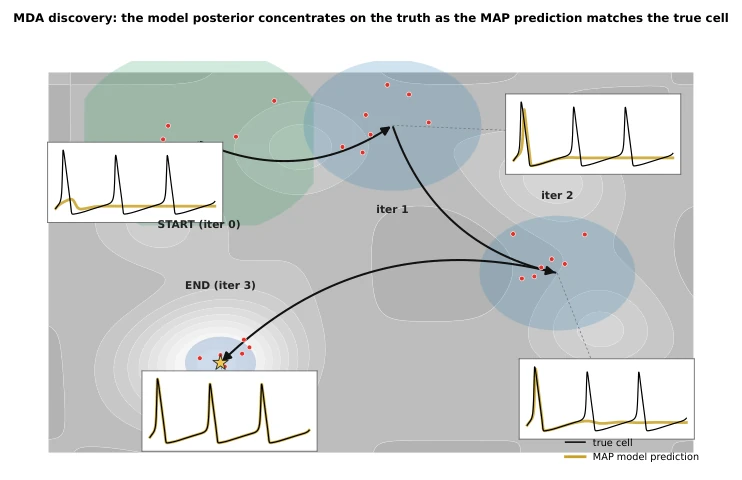
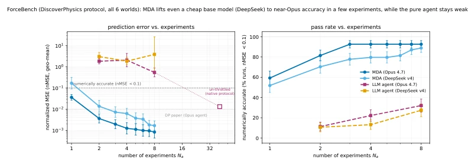
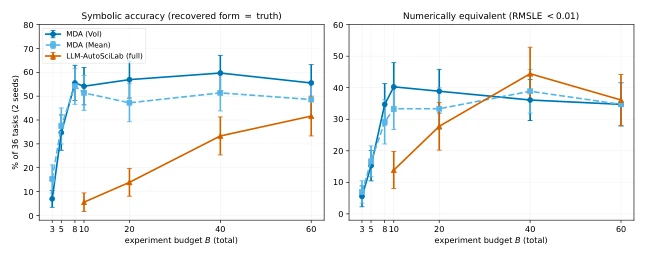
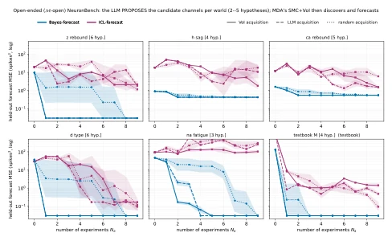
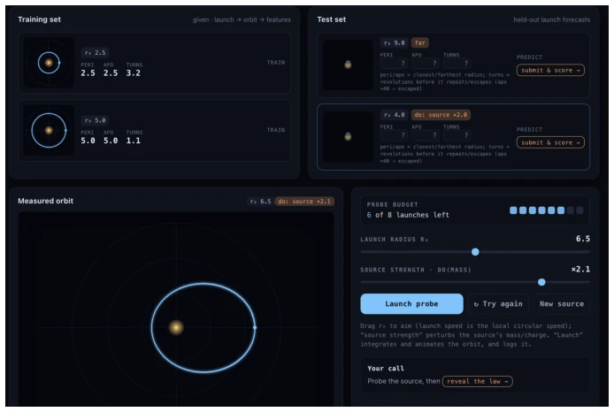
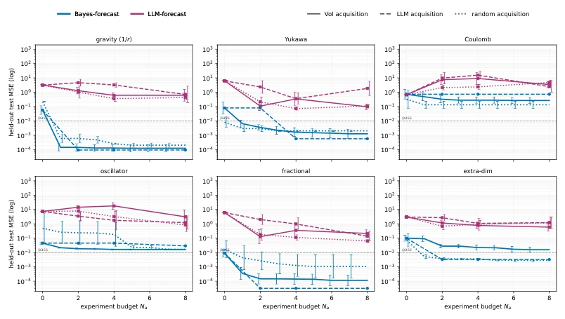
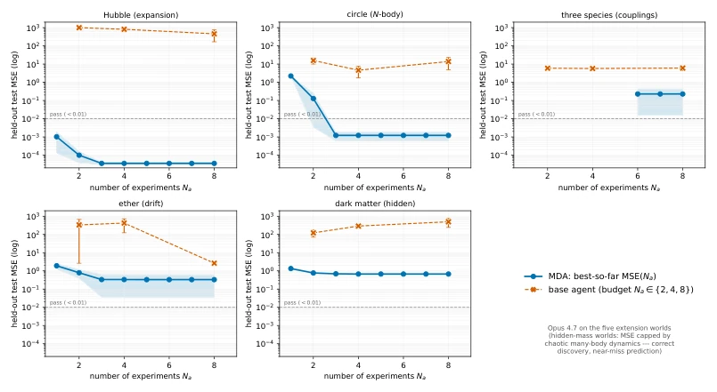
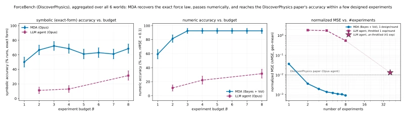

This paper appears to equip LLM scientific discovery with a Bayesian armor. The Murphy team did not pursue flashy end-to-end black boxes, but instead used LLMs as "structure proposers", SMC as "parameter calibrators", and VoI as "experiment conductors". The highlight is the M-open mechanism, which can trigger LLM pool expansion when the true model is not in the candidate pool; this is smarter than pure LLMs. But there are also drawbacks: huge computational overhead, SMC nested LLM calls, running NEURONBENCH likely overwhelms VRAM; moreover, whether the model structure proposed by the LLM is reliable depends entirely on the Prompt and priors; if the LLM fabricates a physical law, even the highest Bayes factor results in garbage in, garbage out. Additionally, although claimed as SOTA, the benchmarks are all synthetic data; noise and cost models in real laboratories may be more complex. However, on the pain point of "few-shot discovery mechanisms", it is indeed much stronger than those LLM agents that only fit curves, at least able to explain "why".
The core pain point lies in "interventional prediction". Pearl (2009) pointed out long ago that passive observation cannot identify mechanisms; intervention is required to break degeneracy. But experiments are expensive, so data efficiency is key. Existing LLM scientific discovery work (e.g., Wiemann et al., 2026; Kabra et al., 2026) can generate hypotheses but often lack rigorous Bayesian inference to quantify uncertainty and are prone to overfitting (e.g., LLM-AUTOSCILAB in CHEMBENCH has accurate numbers but incorrect symbols). Traditional Bayesian experimental design (Lindley, 1956) is good at selecting experiments, but the hypothesis space is usually fixed and cannot handle the M-open situation where "the true model is not in the candidate set". This paper aims to solve: how to reliably discover interpretable mechanism models with the minimum number of experiments in an open hypothesis space, rather than merely fitting data.

Figure 5: The world as a controlled, intervenable state-space model (Eq. (1)). A latent state zt (white) evolves under the mechanism θ (orange; it parameterizes every transition) and emits a lossy, noisy observation yt (grey) — in general only y1:T is seen. Optional exogenous inputs/covariates xt (blue, dashed) and the initial condition ι (which sets z0) are shifts in the inputs to a fixed mechanism. An intervention do(a) is categorically different: the lightning bolt strikes θ itself, changing the mechanism to θa.
方法Method
MDA 采用“提议 - 推断 - 设计”的闭环。首先，LLM 根据自然语言描述和残差提出候选模型结构（粒子）。其次，使用 Sequential Monte Carlo (SMC) 更新模型后验，计算证据（marginal likelihood），这自带奥卡姆剃刀效应，平衡复杂度与拟合度。关键创新在于 M-open 处理：若当前最佳模型预测检查失败（残差过大），LLM 被触发生成新结构，否则仅更新权重。实验设计基于 Value of Information (VoI)，选择能最大化区分模型间差异的干预。针对似然函数，系统支持三种模式：确定性动力学用闭式解，随机动力学用粒子滤波（Particle Filter），高噪轨迹用基于摘要统计量的合成似然（Simulation-based inference）。这种架构让模型既能“猜”新机制，又能“证”旧机制，还能在计算可行范围内处理复杂动态。
MDA adopts a "Propose-Infer-Design" closed loop. First, the LLM proposes candidate model structures (particles) based on natural language descriptions and residuals. Second, Sequential Monte Carlo (SMC) is used to update model posteriors and calculate evidence (marginal likelihood), which inherently carries an Occam's razor effect, balancing complexity and fit. The key innovation lies in M-open handling: if the current best model prediction check fails (residuals too large), the LLM is triggered to generate new structures; otherwise, only weights are updated. Experimental design is based on Value of Information (VoI), selecting interventions that maximize the distinction between models. Regarding likelihood functions, the system supports three modes: deterministic dynamics use closed-form solutions, stochastic dynamics use Particle Filters, and high-noise trajectories use simulation-based inference based on summary statistics. This architecture allows the model to both "guess" new mechanisms and "verify" old mechanisms, and handle complex dynamics within computationally feasible limits.

Figure 1: (a) The MDA discovery loop. See Algorithm 1 for details. (Figure based on (Elteto et al., 2026, Fig.2).) (b) Accuracy-complexity Pareto frontier for models discovered by MDA in the YUKAWA physics environment. Both axes in bits on a linear scale so the convex corner is obvious. The y-axis is inaccuracy, the absolute relative force error in bits, log2(Fpred/Ftrue) . See Section 4.1 for details. (Figure based on (Udrescu & Tegmark, 2020, Fig 1)).

Figure 6: MDA discovery as posterior concentration over model space (schematic, after Fig. 1 of Mod- elSMC (Wahl et al., 2026)). Across the discovery iterations the model posterior (particle clouds; red dots = particles) tightens from a diffuse prior (green) onto the true mechanism (blue, ⋆), while the MAP model’s predicted voltage trace (yellow) sharpens from a poor fit to a spike-for-spike match with the true cell (black). Each iteration acquires one VoI-designed experiment and re-infers the model posterior on the growing dataset (Algorithms 1 and 2).
Tested on three benchmarks: FORCEBENCH, CHEMBENCH, and the newly built NEURONBENCH. FORCEBENCH shows MDA significantly reduces nMSE within 8 experiments, outperforming LLM agents. In CHEMBENCH, MDA reaches 56% Symbol Accuracy (SA) after 8 experiments, while LLM-AUTOSCILAB needs 60 to approach, and the latter often exhibits pathologies where numbers are accurate but structures are wrong (e.g., nested log functions). NEURONBENCH validates partially observable and stochasticity scenarios, where Bayes-forecast outperforms ICL-forecast. Ablation shows VoI design outperforms random and LLM proposal designs. The main finding is "Discovery and Design mutually reinforce": design identifies mechanisms, mechanisms improve predictions, thereby discovering more subtle errors.

Figure 2: Data efficiency on FORCEBENCH, aggregated over all six two-particle worlds. Left: we plot nMSE (geometric mean over the 6 × 9 runs) vs number of experiments. Error bars are ±1 standard error. The red square is the result of the “unthrottled” baseline agent, and matches the paper. Right: we plot fraction of runs where nMSE drops below the 0.1 threshold. See text for details.

Figure 3: Data efficiency curves for CHEMBENCH. We plot mean performance ±1 SE over the 36 tasks, two seeds. Left: symbolic accuracy. Right: numerical equivalence (EXACC, RMSLE < 0.01; the head-to-head Table 9 additionally reports the released benchmark’s own looser 0.05 threshold, for comparability with its published numbers). MDA (VoI) rises to its ceiling within ∼8 experiments and leads on symbolic accuracy at every budget; LLM-AUTOSCILAB only catches up by B = 60. On numerical accuracy, LLM-AUTOSCILAB catches up sooner, but this is because of overfitting (see Table 1).

Figure 4: Data efficiency on all six NEURONBENCH worlds (Opus 4.7). For each world the LLM proposes the candidate channels from the phenotype (2–5 hypotheses, shown in the panel title), and then MDA designs experiments to confirm or refute these hypotheses. After each experiment, we plot the forecast accuracy on the test data. Colour = forecaster (blue Bayes-forecast, purple in-context forecast), line style = acquisition (VoI solid, LLM dashed, random dotted); held-out interventional forecast MSE (spikes2, log) vs. number of experiments; shaded bands are ±1 SE over 3 random initial conditions. The Bayes-forecaster dominates the in- context forecaster everywhere; within the Bayes family VoI and LLM design are similar and both beat random.
其他图片Other Figures

Figure 7: App for FORCEBENCH. The goal is to identify a hidden central-force law from a few probe orbits, then predict held-out launches — including one under a perturbed source. Training orbits (top left), held-out interventional test forecasts (top right), and the reader’s own budgeted experiment bench with an animated measured orbit (bottom). Available at https://claude.ai/code/artifact/ 565fe6cc-a355-4c19-bf7e-b44e766cf87e.

Figure 8: Per-world data efficiency on TWOPARTICLEWORLDS (Opus 4.7; the compact aggregate is Fig. 2 in the main text). One panel per world. Colour = forecaster (blue Bayes-forecast, purple LLM-forecast); line style = acquisition (VoI solid, LLM dashed, random dotted). The initial value at Na = 0 is the result based on D0 before any experiments. Uncertainty is ±1 SE in log10 over 9 runs (3 random initial conditions × 3 draws per IC): a shaded band on the continuous best-so-far Bayes-forecast/VoI traces, and error bars on the Na ∈{0, 2, 4, 8} budget points of both forecasters. Within the Bayes-forecaster family the VoI and LLM design strategies perform similarly and both generally beat random.

Figure 9: Data efficiency on MULTIPARTICLEWORLDS using Opus 4.7. We plot held-out forecast MSE vs. experiments for MDA (solid, mean±SE over seeds) against the pure agent (dashed). MDA is orders of magnitude better at every budget. Several worlds clear the pass line (error of 0.01 or less) within three ex- periments. Ether and dark matter plateau above the line, but this is the intrinsic ceiling of their scoring ( due to near-singular free-fall and a chaotic many-body system), not a discovery failure (since MDA recovers the correct drift and the hidden monopole).

Figure 10: Numeric and symbolic data efficiency on FORCEBENCH (Opus 4.7; the numeric-only, multi- base-model version is Fig. 2). (left) Symbolic (exact-form) accuracy vs. budget: MDA (blue) vs. the pure LLM agent (purple). (middle) Numeric accuracy (nMSE < 0.1): MDA reaches ∼93%; the agent ∼31%. (right) nMSE vs. number of experiments, with the un-throttled Opus agent (star) reproducing the DiscoverPhysics paper’s ∼0.01 at its native ∼41-experiment budget. Error bars are ±1 SE over the 6×9 runs.